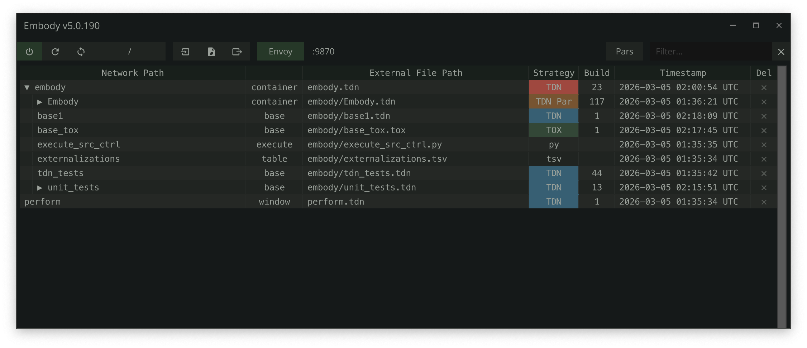

OPEN SOURCE · MIT · TOUCHDESIGNER 2025+
create at the
speed of thought.

THE TOOLSET
three tools, one idea.
Envoy
forward velocity.
46 MCP tools that plug Claude, Cursor, or Windsurf straight into your live session. Say what you want. Watch it happen. Idea to network in seconds.
Embody
lateral velocity.
Tag any operator and Embody externalizes it to version-control-friendly files on disk. Diff what changed, track who changed it, collaborate across branches, and restore any previous state. Your externalized files are the source of truth — not the binary .toe.
TDN
the substrate.
TouchDesigner networks as human-readable JSON. Your agent can read it. You can read it. Git can read it.
IN PRACTICE
say it. watch it happen.
- Build entire networks from a sentence "Build me a noise-driven particle system."
- Try a different approach in seconds "Actually, make it react to audio instead."
- Set any parameter "Set the noise frequency to match the audio input."
- Write extensions "Create an extension class that manages scene transitions."
- Debug errors "Why is my render chain producing a black output?"
- Compare attempts "Show me what changed between this version and the last."
THE FORMAT THAT MAKES IT POSSIBLE
meet TDN.
TDN exports any TouchDesigner network as a single human-readable JSON file — operators, parameters, connections, layout, annotations, DAT content — all of it, in text. Every change becomes a clean diff. Every version is a file your AI agent can read, your team can review, and git can meaningfully compare.
{
"format": "tdn",
"version": "1.3",
"generator": "Embody/5.0.351",
"td_build": "2025.33020",
"exported_at": "2026-04-10T08:15:00Z",
"network_path": "/project1",
"type": "containerCOMP",
"options": { "include_dat_content": true },
"operators": [
{
"name": "noise1",
"type": "noiseTOP",
"parameters": {
"amp": 0.8,
"period": "=absTime.frame * 0.1"
},
"flags": ["viewer"]
},
{
"name": "level1",
"type": "levelTOP",
"parameters": {
"opacity": "~op('ctrl').par.Fade"
},
"inputs": ["noise1"],
"flags": ["display", "render"],
"position": [400, 0]
}
],
"annotations": [
{
"name": "annot1",
"mode": "annotate",
"title": "noise pipeline",
"position": [-100, -200],
"size": [700, 400]
}
]
}- Non-default-only — only what you actually changed gets written.
- Type defaults hoisted — shared properties dedupe across operators.
- Expression shorthand —
=absTime.frame * 0.1instead of verbose wrapper objects. - Round-trip safe — export → edit → import yields the same network.
- The substrate for the entire workflow — forward velocity AND lateral velocity depend on it.
Diffable. Any text tool, any diff viewer, any AI agent can read it.
TDN is what makes the rest of this possible.
GET STARTED
four steps to flow.
-
01
download
Grab the Embody
.toxfrom GitHub Releases. -
02
drag and drop
Drop it into your TouchDesigner project. That's the install.
-
03
enable Envoy
Connect your AI assistant to the session with one toggle.
-
04
tag operators
Double-tap lctrl on any operator to externalize it. Start building.
WHY THIS EXISTS
Everything is moving faster now. Everyone is shipping. We're entering the golden age of digital media, and TouchDesigner is positioned to become one of the leading platforms of content creation. Embody exists to help our community build faster and better than ever — open source, no strings attached, nothing SaaSy.